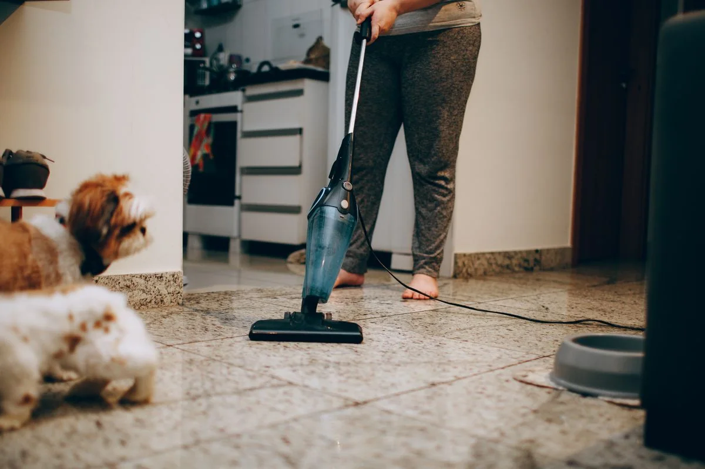
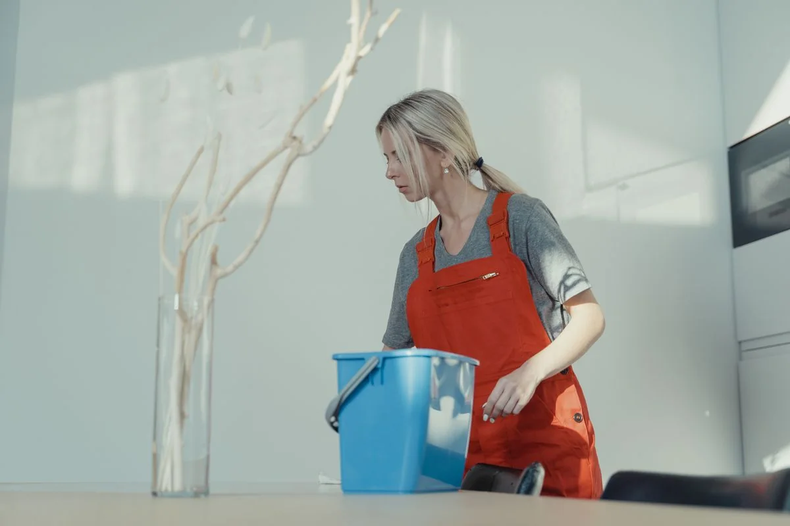
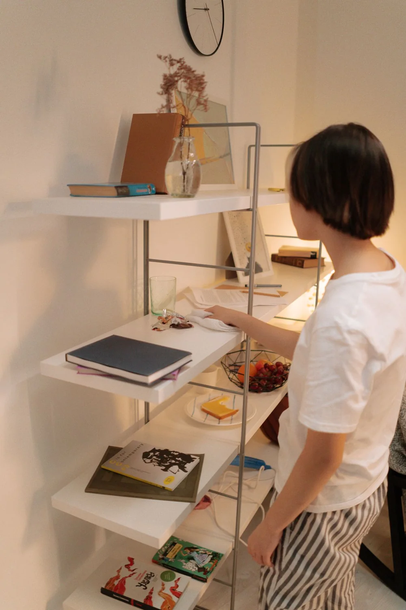

Manutenção semanal
Limpeza de rotina para manter a casa em ordem: superfícies, piso, banheiros e louça. Frequência combinada.
Inclui: cômodos marcados no plano, produtos básicos e material de reposição.
Simular este serviço →Modelo MOSS Digital · Marca fictícia · fotografias de banco ilustrativas · Conheça a MOSS ↗
Modelo ilustrativo de limpeza residencial · sem equipe real
Casa Impecável é um modelo de site para equipes de limpeza residencial. Experimente montar um plano e veja como seria um pedido. A MOSS cria sites; não presta serviços de limpeza.



Cada serviço tem uma lista de tarefas combinada antes. Você acompanha o que será feito e o que fica por sua conta.
Limpeza de rotina para manter a casa em ordem: superfícies, piso, banheiros e louça. Frequência combinada.
Inclui: cômodos marcados no plano, produtos básicos e material de reposição.
Simular este serviço →Reset em detalhes que o dia a dia não alcança: atrás dos móveis, dentro de gavetas e nas bordas.
Inclui: cômodos marcados, alcance completo e revisão junto com você no final.
Simular este serviço →Limpeza antes de receber o imóvel ou antes de mudar: pontos altos, armários, Banheiros e áreas de circulação.
Inclui: cômodos marcados e combinação de data com o horário da mudança.
Simular este serviço →Serviços demonstrativos de uma empresa fictícia; não há orçamento ou visita reais.
Escolha o tipo de limpeza, marque os ambientes e veja o que será feito. É uma estimativa de escopo e tempo, feita no navegador: nada é enviado e nada é gravado.
Três escolhas rápidas para ver como ficaria um plano de limpeza. O exemplo não é enviado a ninguém.
Todos incluem produto e material da equipe.
Marque tudo que entra no plano. Dá para marcar todos.
Ajuda a dimensionar o tempo da equipe.
Escolhe o tipo de limpeza e marca os ambientes.
Em um site real, o cliente poderia conversar com a equipe sobre tamanho da casa e prioridades.
Uma empresa real combinaria visita, valor, data e escopo antes do serviço.
Depois do serviço real, a equipe poderia revisar o trabalho com o cliente.
Orçamento antes de tudoNenhum serviço começa sem escopo, valor e data combinados com você.
Material próprioProdutos e equipamentos são da equipe. Nada é exigido na sua casa.
Cuidado com o que é seuObjetos de valor, pets e áreas delicadas são combinados antes.
Conferência no finalVocê acompanha a revisão e aponta o que faltou, antes de encerrar.
9 fotografias
Fotografias de banco selecionadas pelo assunto. Não são antes e depois de um serviço real nem trabalhos da marca fictícia.
Preencha com dados inventados para simular o pedido de limpeza. A mensagem aparece aqui para você conferir; ela não é enviada para uma equipe de limpeza.
Se quiser um site como este, há um link separado para falar com a MOSS pelo WhatsApp.
Este modelo não publica tabela de preços. O valor depende do tamanho da casa, do estado, do tipo de limpeza e da frequência. Depois da visita você recebe o orçamento por escrito, antes de qualquer serviço.
Sim, na limpeza profunda, com combinado prévio. Se houver objetos de valor, a melhor opção é retirá-los antes — a equipe avisa se precisar.
Não. A equipe leva produto e material. Se você preferir produto específico, ou tiver alergia ou restrição, avise na conversa.
Por segurança, a chave fica com a pessoa responsável da casa ou em cofre combinado. A equipe não guarda chave entre os serviços.
Não. Casa Impecável é uma marca fictícia criada para demonstrar este site. As fotos são de banco e ilustram limpeza e resultado. Em um projeto real, podem ser substituídas por fotos autorizadas do serviço.
A vitrine e o montador de plano funcionam sem banco. A integração opcional com Supabase carrega os serviços publicados e oferece um painel autenticado para o responsável registrar os pedidos recebidos pelo WhatsApp. A instalação está explicada no manual.